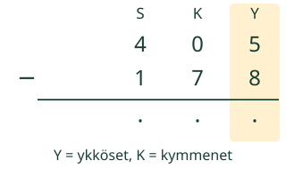
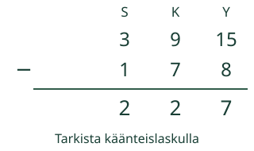
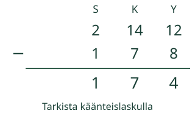

Aavalla on 405 merkkiä. Hän antaa 178 pois. Miten vähennät, kun kymmenten kohdalla on nolla?
Vähennä allekkain ja ymmärrä vaihto.

Kohdista samanarvoiset numerot: ykköset ykkösten alle. Aloita oikealta.
Mallit ja toisto
Omat luvut: kokonaisluvut 0–9999. Myös tuloksen on oltava 0–9999. Vähennyksessä ylempi vähintään alempi.
Yksi askel näyttää yhden päätelmän tai yksiköiden vaihdon. Toisto etenee vain käynnistettäessä; voit pysäyttää tai askeltaa itse.
Esimerkit ja perustelut
Vaihda yksikköä, säilytä määrä
Kohdista samanarvoiset numerot. Vähennä aina alempi luku ylemmästä. Aloita ykkösistä. Jos yksiköitä ei riitä, vaihda yksi suurempi yksikkö kymmeneksi seuraavaksi pienemmäksi.
Esimerkki 1: 352 − 178
Vaihda yksi kymppi ykkösiksi: 3 sataa, 4 kymppiä, 12 ykköstä on yhä 352. Ykköset: 12 − 8 = 4. Nyt kymppejä on 4, ei enää 5.
Vaihda yksi sata kymmeneksi kympiksi: käytössä on 2 sataa, 14 kymppiä ja 12 ykköstä. Kymmenet: 14 − 7 = 7. Sadat: 2 − 1 = 1. Tulos 174. Tarkistus: 174 + 178 = 352.
Esimerkki 2: nollan yli
405 − 178: 0 kymppiä ei riitä vaihtoon. Ensin 1 sata → 10 kymppiä, sitten 1 kymppi → 10 ykköstä. Nyt 3 sataa + 9 kymppiä + 15 ykköstä = 405. Vähennä 15 − 8 = 7, 9 − 7 = 2 ja 3 − 1 = 2. Tulos 227.
Vaihtoketju
1000 − 1: tuhannen esitys 9 sataa + 9 kymppiä + 10 ykköstä on yhä 1000. Yhden poistamisen jälkeen jää 999. Malli näyttää jokaisen vaihdon erikseen.
Väärinkäsitys: numerokohtainen ”aina pienempi suuremmasta” vaihtaa tehtävää. 360 − 195 ei ole 235, vaan 165. Tarkistus 165 + 195 = 360 paljastaa eron.


Kokeile ja tarkista
405 − 178: jos sata vaihtuu kymmeneksi kympiksi ja yksi kymppi ykkösiksi, montako kymppiä jää?
Ensimmäinen tehtävä: Laske 352 − 178. Voit vastata suoraan tai käyttää allekkainlaskua.
JavaScript käynnistää tarkistuksen. Voit myös ratkaista tehtävän paperilla.
Vapaaehtoinen apu
Merkitse jokaisen vaihdon jälkeen käytettävissä olevat yksiköt. Kerro ääneen tai mielessäsi: yksi sata vastaa kymmentä kymppiä. Puhuminen ei ole pakollista.
Vaihda tarvittaessa suurempi yksikkö kymmeneksi pienemmäksi.
Voit vastata suoraan millä tahansa oikealla menetelmällä. Lukukenttä hyväksyy samanarvoisen kokonaisluvun, desimaalin tai murtoluvun (esim. 8,0 tai 16/2). Enintään 128 merkkiä; ei laskulausekkeita tai eksponenttimuotoa.
Lisäkokeilu
Vertaa 1000 − 999 ja 1000 − 1. Molemmat voi laskea myös erotusta täydentämällä. Milloin päässälasku on allekkainlaskua kätevämpi?
Opettajalle, rajat ja paperitehtävä
Tavoite: Kirjallinen vähennyslaskualgoritmi. Vuosiluokat 3–6 kanonisen graafin mukaan. Esitiedot: paikkajärjestelmä ja vastaava yhteen- tai vähennyslasku sataan. Pidä sarakkeen lukuyksikkö näkyvänä.
Pyydä selitys määristä, älä vain numeroiden siirtämisestä. Älä pakota kirjallista algoritmia, jos päässälasku on tilanteessa selkeämpi. Malli ja esimerkit tukevat päättelyä; suora oikea tulos ei kerro käytettyä menetelmää.
Paikallinen palaute koskee tätä vastausta, ei itsenäisyyttä, pysyvyyttä tai formaalia hallintaa. Ei henkilökohtaista historiaa, tallennusta tai ulkoista laskentapalvelua. Ei väitettä oppimistuloksista. Julkisten oppilasreittien toimivuutta ei varmenneta tässä.
Malli ei mittaa fyysistä liikettä tai ajankäyttöä; toiston 0,9 sekuntia on esitystahti. Suuri teksti ja oma askellus ovat käytettävissä. Täyttä manuaalista saavutettavuutta tai oppilaskokeilua ei ole tehty.
Rakenna 105 nipuista ja irtomerkeistä. Poista 18 vaihtamalla ensin sata kymmeneksi kympiksi ja yksi kymppi irtomerkeiksi. Tarkista, että 87 + 18 = 105.
Poistumiskysymys: Laske 502 − 187 ja tarkista yhteenlaskulla. Selitä, miksi nolla kymmenten paikalla ei estä vähennystä.